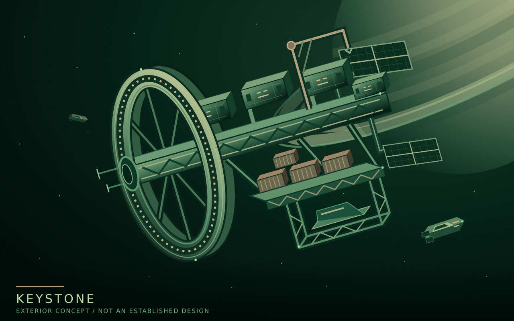

Lore / Keystone
Keystone
| Type | Orbital station town |
|---|---|
| Region | Saturn's ring-settlement network |
| Established | Roughly 10-15 years before the present setting |
| Original purpose | Construction and supply hub |
| Founding operator | EarthWorks Industrial |
| Current role | Permanent home and an important settlement hub |
| Residential gravity | Rotation |
Keystone is the first permanent station in the settlement of Saturn's rings. It began as a construction and supply hub, receiving equipment, supporting construction crews, and supplying new installations. As expansion branched outward, the station grew into a substantial home.
Keystone remains an important hub within a network of roughly three to five major station towns, numerous smaller industrial installations, and selected moon outposts. Its historical role does not give its operator control of the entire network.
{kind=link}

Establishment and growth
The station was established roughly 10-15 years before the present setting. Its primary purpose was to support the construction of the settlement network, rather than to grow around a single resource-processing plant.
The founding operator, EarthWorks Industrial, began its Saturn settlement business with construction and supply. Its influence developed through infrastructure and operating contracts. The wider expansion is backed by Earth funding and major public contracts, while several corporate groups compete for work and influence.
Keystone's growth is part of a continuing development boom, not the aftermath of an economic collapse. New installations and settlement projects continue to create demand for construction, supplies, and transport.
Aquila, a newer freight-hub town, competes with Keystone for traffic and local business. Its operator, Farspan Logistics, is one of the outside carriers on which EarthWorks depends for Earth-Saturn freight, making it both a supplier and a competitor.
Homes and working lives
Keystone is a permanent station town, not merely accommodation for a temporary construction crew. Its residential sections use rotation to provide gravity. Cargo and industrial ships connect home life with work elsewhere in the settlement network.
As elsewhere in the settlements, some residents intend to complete their work and return to Earth, while others consider Saturn their permanent home. The adult population largely consists of arrivals from Earth; locally born children have not yet become a locally born adult generation.
The wider system of employment-dependent housing and services shapes life at Keystone. Earth law and basic rights remain the expected standard, but operators use safety and operational requirements to restrict choices in practice. Recognized workplace representation does not settle the separate question of residents' rights to govern their community.
Name and working ships
Keystone's name belongs to EarthWorks' architectural and engineering tradition: structures that support, connect, and protect. The same family includes Foundation, a large construction and repair support ship, Gantry, a workship, and Bastion, a security vessel. Keystone is their regular regional port, not a claim that all three are always docked there.
Details still open
EarthWorks' precise holdings and Keystone's local administrative arrangements have not yet been established. Neither have the station's exact orbit, population, dimensions, internal layout, or residential gravity level.
The exterior study above is a visual proposal, not an approved engineering design. The illustration in Society and settlement remains a separate, unassigned station concept.